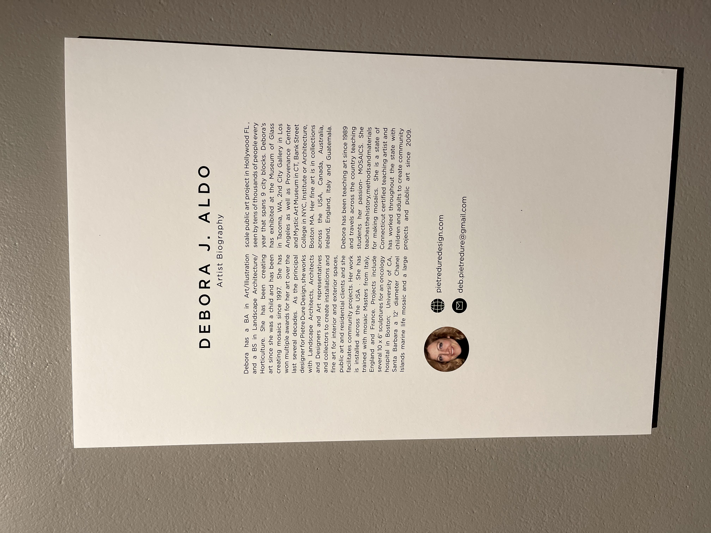
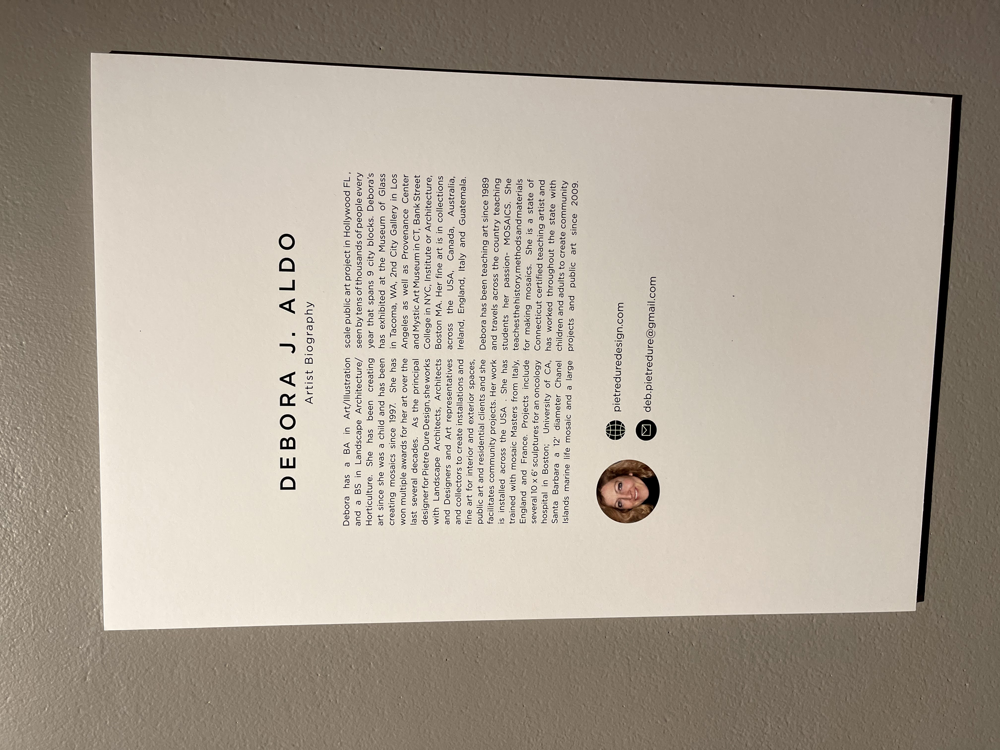

Working as a Graphic Design and Illustration specialist for the UConn Library, I have created marketing materials including marketing screens that are displayed on digital screens in all UConn Libraries and on the website. I have also created posters and labels for an art exhibit called Many Pieces Make a Whole.


For Fall 2021, I was responsible for creating new templates for marketing screens for the UConn Library Faculty-Authored Books and Fall New Tiles Book collection. The new templates I created are more modern and sleek, while highlighting the books and authors.

Another collection of marketing screens that I created was for e-resources. In this example, the e-reource was the BBC Literary Adaptations in Video and the Marketing Screen was displayed on screens in the library as well as the UConn Library homepage.
 

For this project, I created several posters and labels to highlight the UConn Library exhibition Many Pieces Make a Whole by Debora J.Aldo. The posters were meant to be very simplistic but also connect stylistically to the rest of the materials.